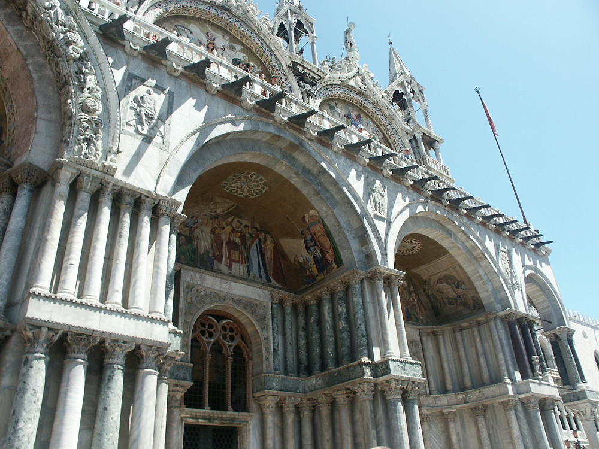

Johnnie and Oberta Baker's Photo Album Previous Gallery Next
|

Everything about St. Mark's Bascilica smacks of wealth. For its opulent design, gilded Byzantine, and its status as a symbol of Venetian wealth and power, from the 11th century on the building was known by the nickname Chiesa d'Oro (Church of gold). |